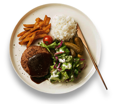
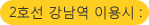

창업설명
안내
온라인 문의
한솥은 고객과
점주들의 이익을
생각합니다.
창업설명회
일정- - 격주 수요일 오전 10시
- - 매월 첫째주 일요일 오전 10시
- - 서울본사 (강남구 위치)
한솥과 함께하는
성공스토리
점주님들의 꿈을 실현시켜 드리기 위해
가맹점주와 성공까지 동행하는 한솥!
상담부터 개업까지 모든 희로애락을 함께 합니다.
한솥도시락
수원경찰서옆점
김학천 사장님
NEWS &
EVENTS
이달의 이벤트
- 한솥 소불고기 배틀
참여하고 경품 받자! - 10만원 이상 구매 시
모바일 시식권 증정!
“따끈한 도시락으로
지역사회에 공헌한다”
라는 기업이념 아래 다양한
사회공헌활동을 진행하고 있습니다.
사회공헌활동
- 사회취약계층 지원
- 불우환자 치료기금 및
연구기금 후원 - 저소득 교육지원

오시는 길
- 서울본사
- 중부사업부
- 대구사업부
- 부산사업부
- 호남사업부
대중교통
|  |
2번 출구 방면으로 이동 > 24시간입주간병지원센터알앤디까지 1개의 횡단보도를 지나 약 678m 이동 > 24시간입주간병지원센터알앤디 앞에서 왼쪽 방향으로 > 한솥까지 약 22m 이동(강남대로66길) |
|---|---|
|
양재역(서초구청) 3번 출구 방면으로 이동 > 올리브영강남우성점까지 3개의 횡단보도를 지나 약 787m 이동 > 올리브영강남우성점 앞에서 오른쪽 방향으로 > 한솥까지 약 22m 이동(강남대로66길) |
|
| 우성아파트 정류장에서 하차하시면 됩니다. |
대중교통
|
2번 출구 방면으로 이동 > 24시간입주간병지원센터알앤디까지 1개의 횡단보도를 지나 약 678m 이동 > 24시간입주간병지원센터알앤디 앞에서 왼쪽 방향으로 > 한솥까지 약 22m 이동(강남대로66길) |
|
|
양재역(서초구청) 3번 출구 방면으로 이동 > 올리브영강남우성점까지 3개의 횡단보도를 지나 약 787m 이동 > 올리브영강남우성점 앞에서 오른쪽 방향으로 > 한솥까지 약 22m 이동(강남대로66길) |
|
| 우성아파트 정류장에서 하차하시면 됩니다. |
대중교통
|
2번 출구 방면으로 이동 > 24시간입주간병지원센터알앤디까지 1개의 횡단보도를 지나 약 678m 이동 > 24시간입주간병지원센터알앤디 앞에서 왼쪽 방향으로 > 한솥까지 약 22m 이동(강남대로66길) |
|
|
양재역(서초구청) 3번 출구 방면으로 이동 > 올리브영강남우성점까지 3개의 횡단보도를 지나 약 787m 이동 > 올리브영강남우성점 앞에서 오른쪽 방향으로 > 한솥까지 약 22m 이동(강남대로66길) |
|
| 우성아파트 정류장에서 하차하시면 됩니다. |
대중교통
|
2번 출구 방면으로 이동 > 24시간입주간병지원센터알앤디까지 1개의 횡단보도를 지나 약 678m 이동 > 24시간입주간병지원센터알앤디 앞에서 왼쪽 방향으로 > 한솥까지 약 22m 이동(강남대로66길) |
|
|
양재역(서초구청) 3번 출구 방면으로 이동 > 올리브영강남우성점까지 3개의 횡단보도를 지나 약 787m 이동 > 올리브영강남우성점 앞에서 오른쪽 방향으로 > 한솥까지 약 22m 이동(강남대로66길) |
|
| 우성아파트 정류장에서 하차하시면 됩니다. |
대중교통
|
2번 출구 방면으로 이동 > 24시간입주간병지원센터알앤디까지 1개의 횡단보도를 지나 약 678m 이동 > 24시간입주간병지원센터알앤디 앞에서 왼쪽 방향으로 > 한솥까지 약 22m 이동(강남대로66길) |
|
|
양재역(서초구청) 3번 출구 방면으로 이동 > 올리브영강남우성점까지 3개의 횡단보도를 지나 약 787m 이동 > 올리브영강남우성점 앞에서 오른쪽 방향으로 > 한솥까지 약 22m 이동(강남대로66길) |
|
| 우성아파트 정류장에서 하차하시면 됩니다. |
대표이사 이영덕 사업자등록번호 214-81-96569 서울시 강남구 강남대로 318(역삼동) 타워837빌딩 8,9층 T. 02-585-1114 F. 02-598-1116 E.
webmaster@hsd.co.kr 한솥 도시락 고객센터 02-585-1114 전국창업설명회 1811-0188 단체주문 1644-3288
COPYRIGHT©㈜한솥. ALL RIGHTS RESERVED.